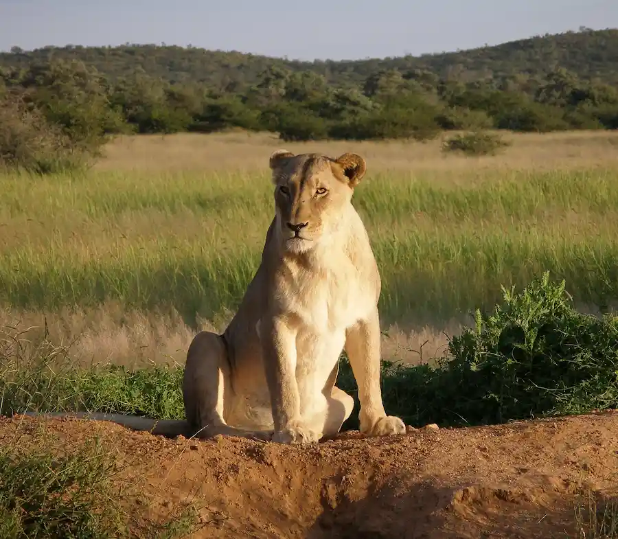
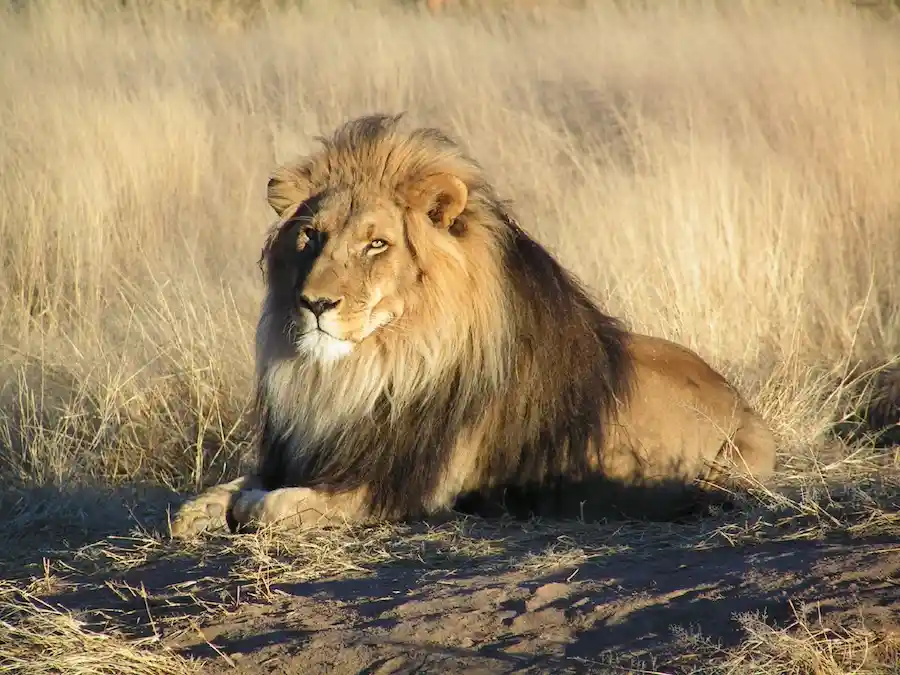

A espécie está classificada como "vulnerável" pela União Internacional para a Conservação da Natureza e dos Recursos Naturais (IUCN), e sofreu um declínio populacional de 30-50% nas últimas duas décadas no território africano. Na Ásia, o leão está confinado a uma única área protegida e sua população é estável, mas está classificado como "em perigo", já que a população não passa de 350 animais. Entre as ameaças, a perda de habitat e os conflitos com humanos são as principais razões de preocupação na sua conservação.
O leão é um dos quatro grandes felinos, com alguns machos excedendo 250 quilogramas em peso, sendo o segundo maior felino recente depois do tigre.
Foi extinto na África do Norte e no Sudoeste Asiático em tempos históricos, e até o Pleistoceno Superior, há cerca de 10 000 anos, era o mais difundido grande mamífero terrestre depois dos humanos, sendo encontrado na maior parte da África, em muito da Eurásia, da Europa Ocidental à Índia, e na América, do Yukon ao México.
Habita preferencialmente as savanas e pastagens abertas, mas pode ser encontrado em regiões mais arbustivas. É um animal sociável que vive em grupos que consiste das leoas e suas crias, o macho dominante e alguns machos jovens que ainda não alcançaram a maturidade sexual.
“E você sabe por que é tao especial? Esses caras são brancos com listras pretas e você é preto com listras brancas!”
A dieta consiste principalmente de grandes ungulados e possuem hábitos noturnos e crepusculares, descansando e dormindo na maior parte do dia. Leões vivem por volta de 10-14 anos na natureza, enquanto em cativeiro eles podem viver por até 30 anos. Alguns animais desenvolveram o hábito de atacar e devorar humanos, ficando conhecidos como "devoradores de homens".
A pelagem é unicolor de coloração castanha, e os machos apresentam uma juba característica. Uma das características mais marcantes da espécie é a presença de um tufo de pelos pretos na cauda, que também possui uma espora